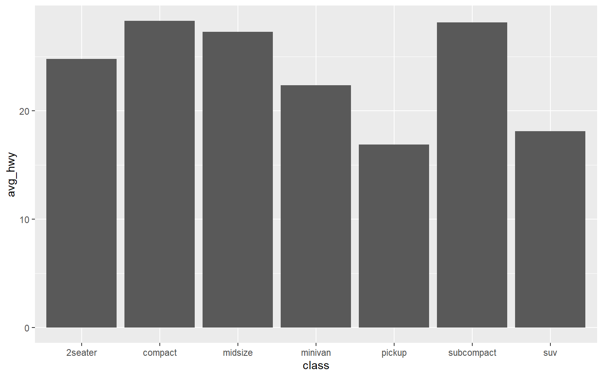
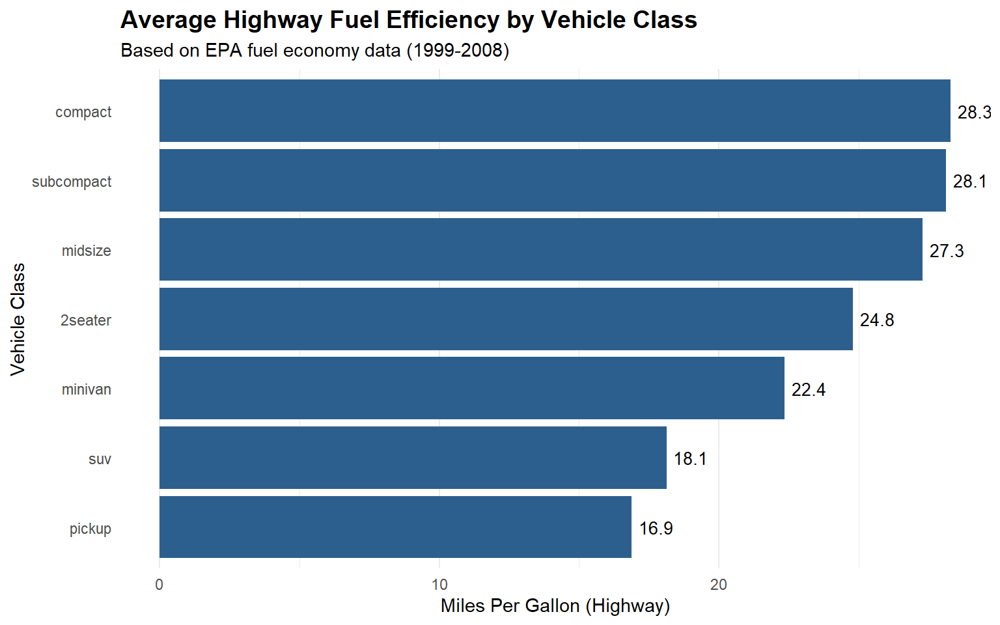
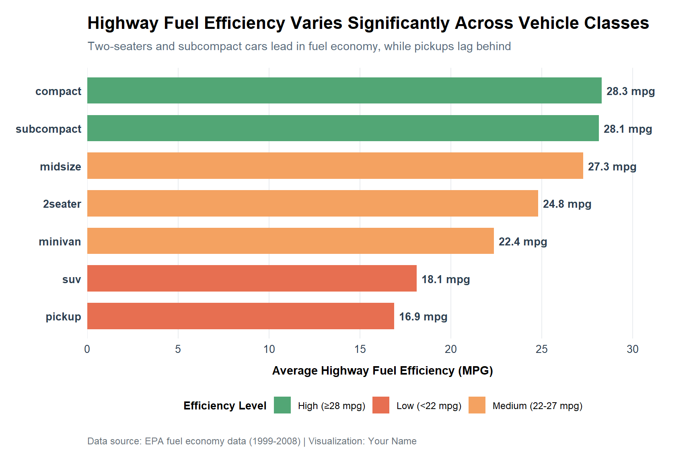

A step-by-step guide to evolving a basic bar chart into an advanced, publication-ready visualization
Author
Joao Luiz D’Andrea
Published
October 12, 2025
Introduction
In this tutorial, we’ll explore how to create increasingly sophisticated bar charts using ggplot2. We’ll start with a basic plot and progressively add elements to make it more informative and visually appealing.
We’ll use the built-in mpg dataset from ggplot2, which contains fuel economy data from 1999 to 2008 for 38 popular car models.
Setup
First, let’s load the required packages and prepare our data:
# Load required librarieslibrary(tidyverse) # Includes ggplot2, dplyr, and other essential packageslibrary(scales) # For formatting axes and labels# Prepare the data: calculate average highway mpg by car classdata_summary <- mpg %>%group_by(class) %>%# Group data by vehicle classsummarise(avg_hwy =mean(hwy), # Calculate mean highway mpgcount =n() # Count number of cars in each class ) %>%arrange(desc(avg_hwy)) # Sort by mpg (highest to lowest)# Preview the datahead(data_summary)
Let’s start with a simple bar chart showing average highway fuel efficiency by vehicle class.
ggplot(data_summary, aes(x = class, y = avg_hwy)) +# Set up the plot with x and y variablesgeom_col() # Create bar chart (columns)

Code Explanation
Line 1:ggplot(data_summary, aes(x = class, y = avg_hwy)) - Initializes the plot with our summarized data, mapping vehicle class to the x-axis and average highway mpg to the y-axis
Line 2:geom_col() - Adds bars to the plot where bar heights represent the actual values in the data
What we have so far: A functional but basic bar chart. The data is visible but the chart lacks context, proper ordering, and visual appeal.
Chart 2: Intermediate Enhancement
Now we’ll improve the chart by reordering bars, adding better labels, and applying a clean theme.
What we’re adding in this evolution:
Reordered bars for better readability (highest to lowest)
Custom colors to make the chart more engaging
Improved axis labels and title for clarity
Clean theme to remove visual clutter
Value labels on bars for precise data reading
ggplot(data_summary, aes(x =reorder(class, avg_hwy), y = avg_hwy)) +# Reorder bars by mpggeom_col(fill ="#2C5F8D") +# Solid color fillgeom_text(aes(label =round(avg_hwy, 1)), # Add value labelshjust =-0.2, # Position labels to the rightsize =3.5) +# Set text sizecoord_flip() +# Flip to horizontal barslabs(title ="Average Highway Fuel Efficiency by Vehicle Class", # Main titlesubtitle ="Based on EPA fuel economy data (1999-2008)", # Subtitle for contextx ="Vehicle Class", # X-axis labely ="Miles Per Gallon (Highway)"# Y-axis label ) +theme_minimal() +# Clean, minimal themetheme(plot.title =element_text(face ="bold", size =14), # Bold titlepanel.grid.major.y =element_blank() # Remove horizontal gridlines )

Code Explanation
Line 1:aes(x = reorder(class, avg_hwy), y = avg_hwy) - Reorders the bars from highest to lowest fuel efficiency for easier comparison
Line 2:geom_col(fill = "#2C5F8D") - Creates bars with a custom blue color instead of default gray
Lines 3-5:geom_text() - Adds numeric labels to each bar, rounded to one decimal place and positioned slightly to the right
Line 6:coord_flip() - Flips the chart to horizontal orientation, making class names easier to read
Lines 7-12:labs() - Adds descriptive title, subtitle, and axis labels to provide context
Line 13:theme_minimal() - Applies a clean theme with minimal visual elements
Lines 14-17:theme() - Customizes specific theme elements like title formatting and removes horizontal gridlines for cleaner appearance
What we have now: A much more readable chart with proper ordering, context through labels, and a professional appearance. The horizontal orientation makes class names easier to read.
Chart 3: Advanced Visualization
Let’s take it to the next level with color coding, annotations, and polished formatting suitable for publication or presentation.
What we’re adding in this final evolution:
Color-coded bars based on efficiency levels (high/medium/low)
Expanded y-axis to accommodate labels without overlap
Formatted axis labels with proper spacing
Custom color palette that’s colorblind-friendly
Enhanced typography for better readability
Data source caption for proper attribution
Refined spacing and margins for professional appearance
# Create efficiency categories for color codingdata_summary <- data_summary %>%mutate(efficiency_level =case_when( # Create categorical variable avg_hwy >=28~"High (≥28 mpg)", # High efficiency avg_hwy >=22~"Medium (22-27 mpg)", # Medium efficiencyTRUE~"Low (<22 mpg)"# Low efficiency ) )# Define custom color palette (colorblind-friendly)efficiency_colors <-c("High (≥28 mpg)"="#52A675", # Green for high efficiency"Medium (22-27 mpg)"="#F4A261", # Orange for medium"Low (<22 mpg)"="#E76F51"# Red for low efficiency)ggplot(data_summary, aes(x =reorder(class, avg_hwy), y = avg_hwy, fill = efficiency_level)) +geom_col(width =0.7) +# Slightly narrower barsgeom_text(aes(label =paste0(round(avg_hwy, 1), " mpg")), # Labels with unitshjust =-0.1, # Position outside barssize =3.5,color ="#2C3E50", # Dark gray textfontface ="bold") +# Bold fontscale_fill_manual(values = efficiency_colors, # Apply custom colorsname ="Efficiency Level") +# Legend titlescale_y_continuous(expand =expansion(mult =c(0, 0.15)), # Expand right side for labelsbreaks =seq(0, 35, by =5)) +# Set axis breakscoord_flip() +labs(title ="Highway Fuel Efficiency Varies Significantly Across Vehicle Classes",subtitle ="Two-seaters and subcompact cars lead in fuel economy, while pickups lag behind",x =NULL, # Remove x-axis label (obvious)y ="Average Highway Fuel Efficiency (MPG)",caption ="Data source: EPA fuel economy data (1999-2008) | Visualization: Your Name" ) +theme_minimal(base_size =12) +# Base font sizetheme(# Title and text stylingplot.title =element_text(face ="bold", size =16, margin =margin(b =8)),plot.subtitle =element_text(size =11, color ="#5A6C7D", margin =margin(b =15)),plot.caption =element_text(size =9, color ="#6C757D", hjust =0, margin =margin(t =15)),# Axis stylingaxis.title.x =element_text(size =11, face ="bold", margin =margin(t =10)),axis.text =element_text(size =10, color ="#2C3E50"),axis.text.y =element_text(face ="bold"),# Legend stylinglegend.position ="bottom",legend.title =element_text(face ="bold", size =10),legend.text =element_text(size =9),# Grid and panel stylingpanel.grid.major.y =element_blank(), # Remove horizontal gridpanel.grid.major.x =element_line(color ="#E9ECEF", linewidth =0.5),panel.grid.minor =element_blank(), # Remove minor gridlines# Marginsplot.margin =margin(15, 15, 15, 15) # Add space around plot )

Code Explanation
Lines 2-8: Creates a new categorical variable efficiency_level using case_when() to classify vehicles into high/medium/low efficiency groups
Lines 11-15: Defines a colorblind-friendly color palette with meaningful colors (green for high, orange for medium, red for low efficiency)
Line 17:aes(..., fill = efficiency_level) - Maps the efficiency level to bar colors
Line 18:geom_col(width = 0.7) - Creates slightly narrower bars for a more refined appearance
Lines 19-23: Adds formatted labels with “mpg” units, positioned outside bars with bold dark gray text
Lines 24-25:scale_fill_manual() - Applies our custom color palette and sets the legend title
Lines 26-27:scale_y_continuous() - Expands the right side of the plot to prevent label cutoff and sets regular axis breaks
Lines 30-34: Enhanced labels with a descriptive title, informative subtitle, and proper data attribution in the caption
Lines 36-59: Comprehensive theme customization including: - Typography adjustments (sizes, weights, colors) - Legend positioning at the bottom - Refined gridlines (keeping only major x-gridlines) - Proper margins for breathing room
Final result: A publication-ready visualization with clear data communication, professional styling, and accessibility considerations. The color coding adds an extra layer of information, while the polished formatting makes the chart suitable for reports, presentations, or blog posts.
Comparison: All Three Charts
Here’s a side-by-side view of our progression:
Aspect
Basic
Intermediate
Advanced
Readability
Poor (vertical text, no order)
Good (horizontal, sorted)
Excellent (all + color coding)
Context
None
Title & labels added
Full context with subtitle & caption
Visual Appeal
Plain gray bars
Single color + theme
Color-coded + polished design
Data Labels
None
Values shown
Values with units
Professional Use
Not recommended
Acceptable for internal use
Publication-ready
Key Takeaways
Tips for Creating Better ggplot2 Charts:
Always reorder categorical data - Use reorder() or fct_reorder() to sort bars by value for easier comparison
Choose colors purposefully - Use color to convey meaning (like efficiency levels), not just decoration. Check colorblind-friendliness with tools like ColorBrewer
Add context through text - Titles should tell a story, subtitles add detail, and captions credit data sources
Label your data directly - When possible, add value labels to reduce the need for axis reading
Use coord_flip() for long category names - Horizontal bars make text more readable than rotated labels
Embrace white space - Don’t overcrowd your plot. Remove unnecessary gridlines and add margins
Consider your audience - Internal reports might need basic charts, but presentations and publications deserve the advanced treatment
Test different themes - Start with theme_minimal() or theme_classic() and customize from there
Maintain consistency - If creating multiple charts, use the same color palette and styling across all visualizations
Export at high resolution - Use ggsave() with dpi = 300 for print-quality images
Next Steps
Try applying these principles to other chart types:
Line charts for time series data
Scatter plots with trend lines
Faceted charts for comparing multiple groups
Box plots for distribution analysis
Want to save your custom theme?
You can create a custom theme function to reuse across all your plots:
theme_yourstyle <-function() {theme_minimal(base_size =12) +theme(plot.title =element_text(face ="bold", size =16),plot.subtitle =element_text(color ="#5A6C7D"),# ... add all your custom theme elements )}# Then use it like:ggplot(data, aes(x, y)) +geom_col() +theme_yourstyle()